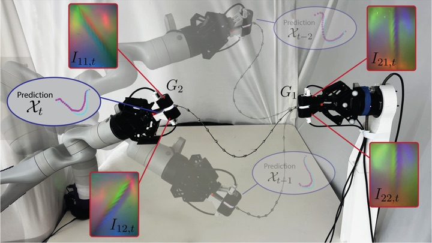
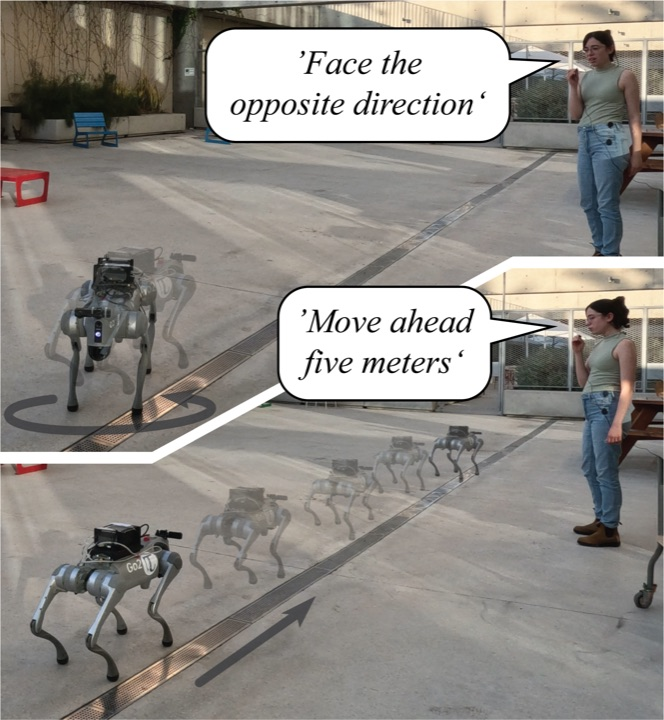
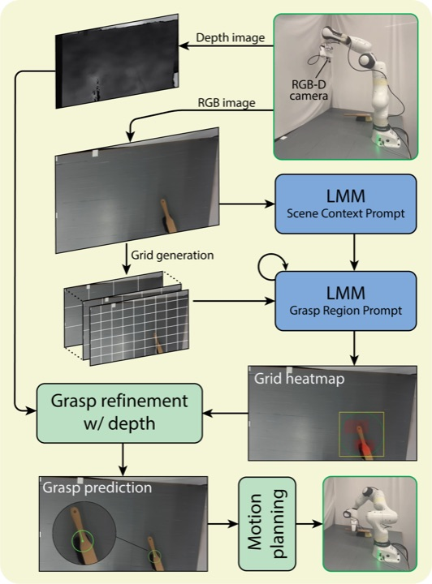
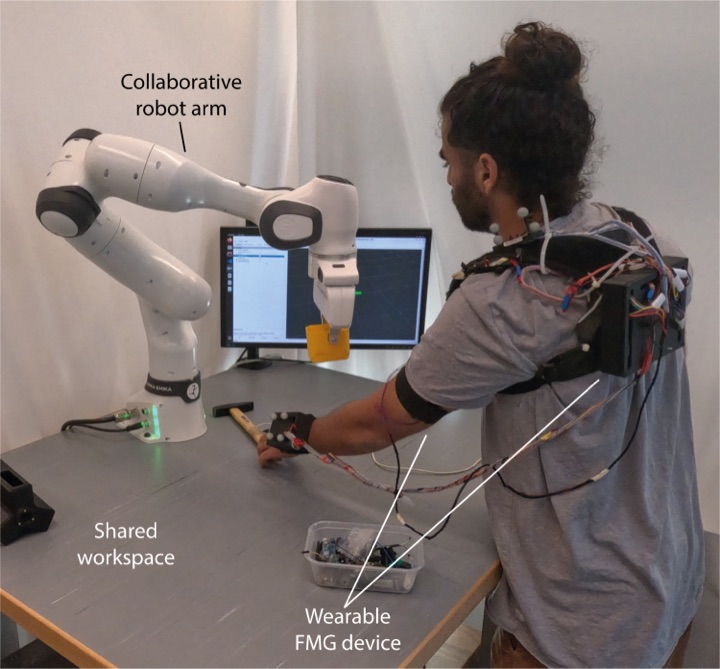

Feeling the cable
Estimating the full 3D shape of a grasped cable from tactile sensors and the robot's own pose, with no camera. I am extending this to a joint model of cable state and dynamics that uses force-sensing tactile arrays.

Ph.D. Candidate, Mechanical Engineering, Tel Aviv University
ROB-TAU Robotics Lab · Advisor: Prof. Avishai Sintov
I am a Ph.D. candidate in Mechanical Engineering at Tel Aviv University, advised by Prof. Avishai Sintov in the ROB-TAU Robotics Lab. I work on robot learning and perception for cables and other deformable linear objects: estimating their shape from touch, learning models of how they move, and using those models to manipulate them.
Before my Ph.D., I received an M.Sc. in Systems Engineering from Tel Aviv University, where I estimated human arm pose with a wearable force-myography device for human-robot collaboration. I hold a B.Sc. in Mechanical Engineering from Afeka Academic College of Engineering.
Estimating the full 3D shape of a grasped cable from tactile sensors and the robot's own pose, with no camera. I am extending this to a joint model of cable state and dynamics that uses force-sensing tactile arrays.
Swinging a held cable so that its tip strikes a 3D target, on a KUKA LBR Med 7. This includes system identification that matches the simulated cable to the real one, so that motions planned in simulation work on the robot.
Routing a cable through the fixtures of the ManipulationNet cable-routing board with a single arm, using a GPU-parallel simulation built for policy learning.
Real-time segmentation of cluttered cables in camera images, fitting one smooth curve to each cable. Code

Under review, IEEE Robotics and Automation Letters
Cameras often lose sight of a cable where the robot grasps it, or when fixtures and the robot itself block the view. We estimate the full 3D shape of a cable held between two grippers from four DIGIT tactile sensors and the robot's pose alone, using a pretrained tactile transformer and a training loss based on elastic-rod physics. On a 550 mm steel wire the model reaches 30.5 mm RMSE at about 16 Hz, versus 55 mm from gripper pose alone, and it adapts to new cables with a small amount of fine-tuning data.
NeurReps Workshop at NeurIPS 2026
Data-driven cable simulators must predict how cables they were not trained on move over hundreds of steps, and their errors grow where the cable touches itself or the floor. We add a distance-based bias to a graph transformer's attention and test which distance it should carry: along the cable, through space, or both on separate attention heads. Both distances on separate heads is best or near-best on every metric, and when attention is the only link between distant segments, the along-the-cable bias cuts prediction error by 15% and more than halves segment-length drift.

Intelligent Service Robotics, 2026
People give a robot the same instruction in many different words, and language-model systems often need fixed phrasings or careful prompts to respond reliably. We recorded spoken directions paired with the paths that followed them, expanded them with paraphrases, and trained a diffusion policy that turns a transcribed command directly into a motion path. The method was evaluated in simulation and on a real Unitree Go2 quadruped following spoken directions.

Intelligent Service Robotics, 2026
Service robots need to pick up objects they have never seen and hold them the way a person would, such as a knife by its handle. ORACLE-Grasp asks an off-the-shelf vision-language model, with no extra training, to describe an object's graspable parts and then to choose the best grasp region on a grid over the image, which depth data then refines. On a Franka arm with 20 everyday objects, the robot picked up the object in 88% of attempts.

IEEE Robotics and Automation Letters, 2025 · presented at IROS 2025
A robot sharing a workspace with a person needs to know where the person's arm is, but cameras fail when the arm is hidden or the lighting is poor. We built a shoulder-worn force-myography device with 32 force sensors that feel how the shoulder and arm muscles press against it, and a transformer that maps these readings to the positions of the elbow and wrist. In a camera-free test, a Franka arm paused whenever the user's arm crossed its path, and it responded correctly in 84% and 90% of trials across two sessions.
School of Mechanical Engineering, Tel Aviv University